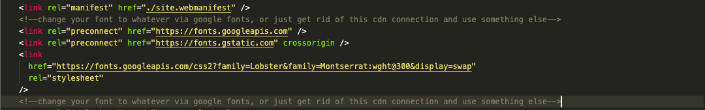

Firstly, thanks for downloading this template and I hope you enjoy working with it.
This page should guide you through updating the template to making it your own. Please read the documentation carefully & once you have made changes, you should be able to upload the folder to your server!
NB: For best experience, have these documents displayed on a Desktop or Tablet.
In order to alter the content and look and feel. It is recommended to
use
Visual Studio Code (Free Download)
& Install the Extension
Live Server
.
Once you have installed the software and extension, open the folder in
VS Code, click the
Go Live
icon in the bottom right of the Visual Studio Code
screen. This will open the index.html page.
This section is editable via the hero.json, images.json
{
"title": "Hi!. I'm a Flexible HTML Template!",
"subTitle": "Change Me to whatever you need!",
"link": "add your https://... link to whatever",
"linkText": "Read My Documentation"
}
Change the values of each property of this object to what you need. NB:
Don't change the property names though!
e.g:
"title": "Change ME",
"DO NOT CHANGE ME!": "Hi!. I'm a Flexible HTML Template!",
To change the background image of the hero...
{
"heroImage": "https://link-to-your-image or img in top level img directory",
"profileImages": [
//we will come to these later...
]
}
Just change heroImage and this will alter the background image. NB: Use a nice big picture. Smaller images will appear blurry. If you need to compress the image, I recommend: JPEG Compress or PNG Compress to bring down the size of your images.
This is a flexible section where you can display links to projects, events, or other sites and is editable via the images.json
{
"heroImage": "//this has been done in the above section",
"profileImages": [
{
"image": "link to your image either https://link or local img directory",
"title": "A lovely Forest",
"text": "your description",
"date": "22-01-01", <--FORMAT: YYYY/MM/DD optional - place 'null' where not required
"link": "https://www.bbc.co.uk/news",
"linkText": "Read Me"
},
{
"image": "link to your image either https://link or local img directory",
"title": "A Forest",
"text": "your description",
"date": "22-01-01",
"link": "https://www.bbc.co.uk/news",
"linkText": "Read Me"
},
{
"image": "link to your image either https://link or local img directory",
"title": "Some trees",
"text": "your description",
"date": "22-01-01",
"link": "https://www.bbc.co.uk/news",
"linkText": "Read Me"
}
]
}
Alter the values of this profileImages Object Array. You can have as many of these as you like, just copy & paste one of the objects into the array.
NB: Rememember to comma separate the objects, otherwise, it'll break:
array: [
{
prop: val
},<--this comma here is important!
{
prop: val2
}
]
This section displays up to 16 different social media sites. These are configurable via the social.json. Just add your details into the objects. Remove the ones you don't use, and they will render in the navigation.
{
"socialLinks": [
{
"type": "twitter",
"link": "https://twitter.com"
},
{
"type": "facebook",
"link": "https://www.facebook.com"
},
{
"type": "linkedin",
"link": "https://www.linkedin.com"
},
{
"type": "instagram",
"link": "https://www.instagram.com"
},
{
"type": "whatsapp",
"link": "https://www.whatsapp.com/download"
},
{
"type": "youtube",
"link": "https://youtube.com"
},
{
"type": "pinterest",
"link": "https://pinterest.com"
},
{
"type": "vimeo",
"link": "https://vimeo.com"
},
{
"type": "snapchat",
"link": "https://www.snapchat.com/"
},
{
"type": "slack",
"link": "https://www.slack.com"
},
{
"type": "behance",
"link": "https://behance.net"
},
{
"type": "medium",
"link": "https://medium.com"
},
{
"type": "reddit",
"link": "https://reddit.com"
},
{
"type": "dribbble",
"link": "https://dribbble.com"
},
{
"type": "messenger",
"link": "https://www.messenger.com/"
},
{
"type": "tumblr",
"link": "https://tumblr.com"
}
]
}
NB: If you remove say...facebook and need it later on, make sure you set
the type: to lowercase e.g facebook
NOT Facebook/FACEBOOK
,
as this helps to render images set in the directory for your icons.
In Mobile, these links appear in the footer, on Desktop in the Nav Bar. But if you want to alter the css to display both, you can.
There are some variables which control the colors & font families set at the top of the style.css file. This can be found in the css directory. You can extend this as much as you want.
If your using google fonts, there are some comments in the index.html to show you where to set the links in the head tag of the document.
This stylesheet you can play with, but the classes are baked into the script, so don't change the class names, just alter what is happening within each class.
Well, that's about it. Once you get rolling with the objects, you'll see how easy it is to create your content. If you have any questions, get in touch.
Enjoy!